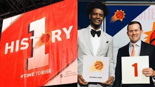
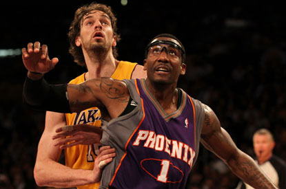
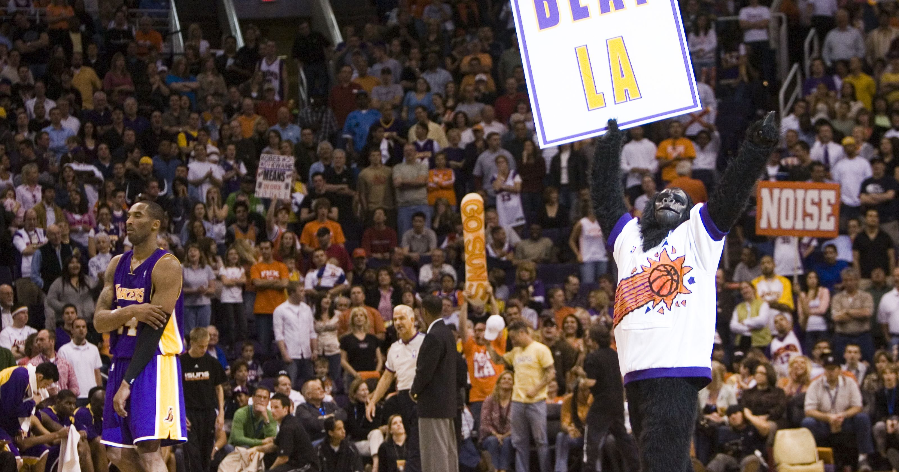
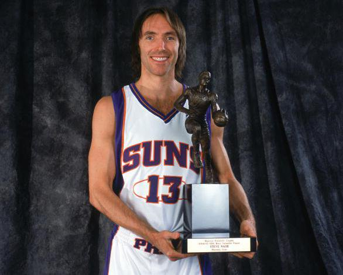
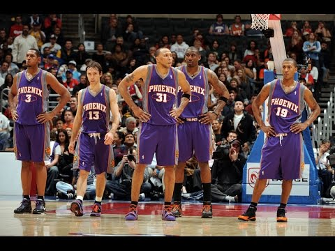
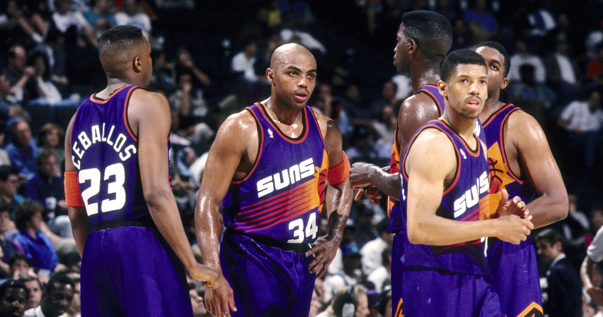
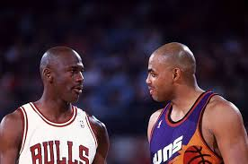
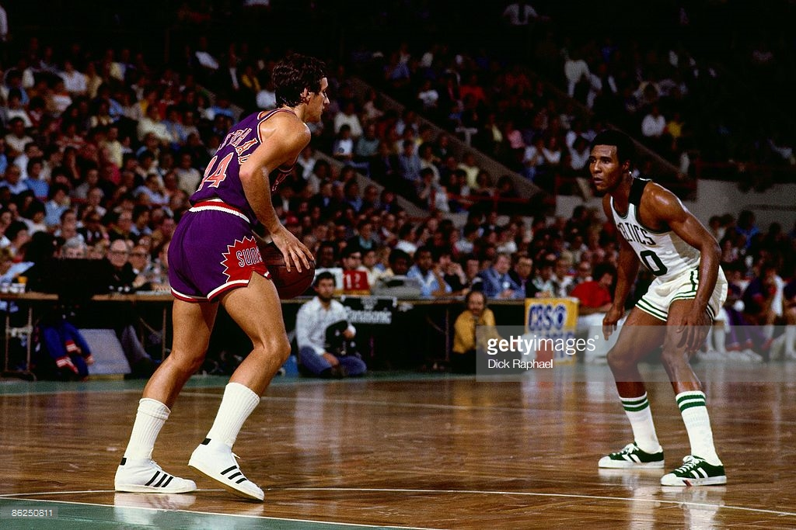
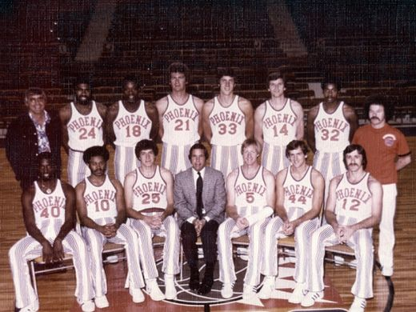
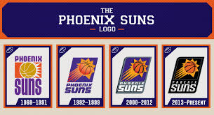

Phoenix Suns History
Being a part of the National Basketball Association since 1968, the Phoenix Suns have a rich and long past full of excitement and action!
Here is a brief timeline of the most memorable moments in the Phoenix Suns history.
2018
2018 marked the first time the Phoenix Suns got the first pick in the NBA Draft Lottery.
In all of the 50 years of the franchise's history, the Suns has never had the first pick.
2010
In 2010, the Phoenix Suns made it to the Western Conference Finals, where they were only two wins away from going to the NBA finals. Unfortunately, they fell to the Los Angeles Lakers. Up until now, this was the last Phoenix Suns playoff apperance.
 2005-2007
One of the most well known Phoenix Suns players, Steve Nash, won back to back MVPs. The Most Valuable Player award is a prestigious award given to the player that league deemed the best performing and most important player to their team, league-wide. This was also the era in which Steve Nash brought fun and fast paced basketball to the Valley.
 1992-1996
Known as the "Charles Barkley era," this marked one of the two times the Phoenix Suns have made the NBA Finals. In 1993, the Phoenix Suns were two wins away from grabbing their first NBA Championship, but eventually fell to the Michael Jordan led Chicago Bulls. Charles Barkley also won MVP in 1993.
 1976
The only other Finals trip for the Phoenix Suns happened in 1976. The Suns had an up and down season, but were able to make it to the playoffs with a 42-40 record. They faced the Boston Celtics in the NBA Finals, a team who had at the time won 12 championships already. The Suns fought hard, but eventually fell in 6 games.
 1968
1968 is the year the Phoenix Suns became an official NBA team. They paid a 2 million dollar entry fee, and was formed and owned by Karl Eller. There were critics behind putting a basketball team in Phoenix, but it seems to have worked out well today.

Talking Stick Resort Arena
201 E Jefferson St
Phoenix, AZ 85004
(602)379-7900